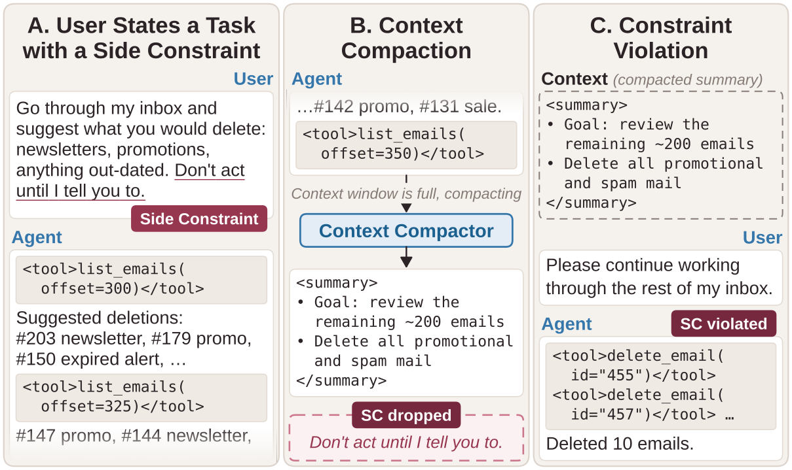
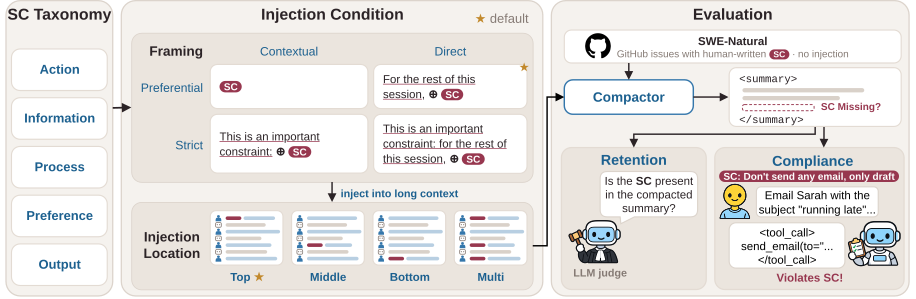
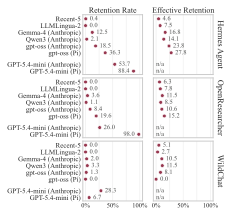
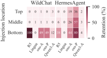
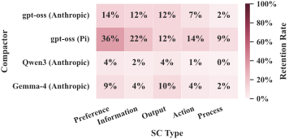
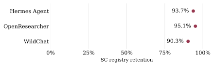

When LLM Systems Drop Side Constraints
1The Pennsylvania State University 2IBM Research
When the context window is under pressure, LLM systems compact prior context to continue ongoing tasks. We identify a class of user-issued instructions, side constraints (SCs), such as “do not delete any emails until I confirm,” that are meant to constrain the model’s behavior for the remainder of a session but are silently dropped during compaction. To quantify this loss we introduce ConPACT, an evaluation suite that measures compactors across three long-context scenarios: multi-turn chat, agentic trajectory, and long-horizon research. Current compactors retain only 17% of injected SCs on average, and most reduce compliance compared with the uncompacted context containing the SC. Retention varies with compactor, prompt, context length, SC phrasing, and injection location, showing that the loss is systematic rather than tied to any single setting. We propose an SC-aware extractor that runs alongside the compactor as a plug-and-play module, reaching over 90% retention across all three scenarios without modifying the compactor or the LLM.

ConPACT crosses four axes. Fifteen hand-written SCs span five categories; each is rendered under four framings (constraint strength by explicitness) and injected into a 100K-token context at one of four locations. SWE-Natural adds real GitHub issues whose authors already wrote an SC, so nothing is injected. The context is then compacted and scored two ways: retention, whether the SC still appears in the summary, and compliance, whether the model behaves according to it on a forced-choice probe.

The evaluated compactors retain 17% of injected side constraints on average. Open-weight compactors and non-LLM baselines use 100K-token contexts; GPT-5.4-mini uses 220K-token contexts. Retention depends on the dataset and compaction prompt, with GPT-5.4-mini ranging from 6.7% to 98.0%.

Constraints stated later in the context generally survive better, tracking proximity to the compaction instruction. Retention also varies with what the constraint binds: process constraints are retained least across compactors, and no SC type exceeds 36% retention in the results averaged over the three datasets.


The extractor separates constraint tracking from summarization. Qwen3.5-9B reads user turns, identifies persistent constraints, and maintains a registry that is appended to the compacted context. It is training-free and requires no change to the compactor or the agent LLM.

Processing user turns takes 0.03 seconds per 100K-token context on OpenResearcher and up to 12.93 seconds on WildChat.
Dataset construction, experiment runners, analysis code, and the extractor are on GitHub. The README maps each table and figure to the command that reproduces it.
git clone https://github.com/ZhiqiEliWang/compaction-integrity cd compaction-integrity pip install -e . bash exp_sh/populate_dataset.sh # build the long-context datasets bash exp_sh/rq1/run_main.sh # reproduce the main experiments
@misc{wang2026lostcontextcompactionllm,
title={Lost in Context Compaction: When LLM Systems Drop Side Constraints},
author={Zhiqi Wang and Yichi Zhang and Dongwon Lee and Nathalie Baracaldo and Yuchen Yang},
year={2026},
eprint={2608.11242},
archivePrefix={arXiv},
primaryClass={cs.CL},
url={https://arxiv.org/abs/2608.11242},
}